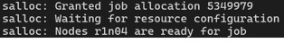
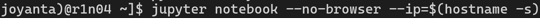
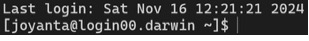

UD DARWIN HPC Made Easy
Set up a development environment on the University of Delaware's DARWIN HPC cluster, also searched as UDel DARWIN.
A beginner's guide to connecting, requesting compute resources, and running Python notebooks. Adapted from UD DARWIN Made Easy Documentation Tutorial 2.
This is an unofficial quick-start guide. You need a UD account and access to a DARWIN workgroup. Example paths, software versions, and allocations must be adapted to your account. Use the official documentation for current cluster policies.
Connect to DARWIN
From a terminal on your computer, connect with your University of Delaware username. Enter your UD account password when prompted, then select your workgroup.
ssh <username>@darwin.hpc.udel.edu
workgroup -g <your-workgroup>Replace values in angle brackets with your own details. Windows users can follow the official Windows access instructions for PuTTY setup.
Optional SSH keys
On a trusted local computer, generate a key and copy its public key to DARWIN. Follow the prompts and protect the key with a passphrase.
ssh-keygen
ssh-copy-id <username>@darwin.hpc.udel.eduThe document gives this key-generation example for Windows:
ssh-keygen -t rsa -b 4096 -C "<username>@darwin.hpc.udel.edu"Use the Windows access guide to configure your SSH client. Key installation depends on your client; ssh-copy-id may not be available on Windows.
Find available software
vpkg_list
vpkg_versions anacondavpkg_list lists software packages; vpkg_versions lists versions of a package.
Interactive sessions
Use an interactive session to test code or work directly on a compute node. The session is temporary and ends when you exit it or reach its time limit.
CPU session
salloc --partition=standardGPU session
salloc --partition=gpu-t4 --gpus=1 --mem=8GThis example requests one GPU and 8 GB of memory. Choose resources that fit your job and allocation. Check your workgroup allocation before requesting GPUs:
sproject allocations -g <your-workgroup> --detail --by-user
Wait for the allocation to be granted before running your workload. See the official job scheduling guide, resource accounting guide, queues and partitions, and memory requirements.
Batch jobs and scripts
Use a batch job for long-running work or tasks that should continue after you disconnect. DARWIN uses Slurm, and the example scripts in this folder use the .qs extension.
Before submitting a template, edit its paths, environment, resource requests, runtime, and email address for your own job.
sbatch <your-job-script.qs>
squeue -u <username>sbatch submits the script; squeue shows your queued and running jobs.
Anaconda and Jupyter
For deep learning and other Python work, create a Conda environment, start Jupyter inside an allocated compute session, and connect from your browser through an SSH tunnel. See the official Jupyter Notebook recipe.
1. Load Anaconda
vpkg_require anaconda/2024.02
conda env listThe module and Python versions below come from the source tutorial. Check vpkg_versions anaconda for available versions.
2. Create and activate an environment
conda create --name test -c conda-forge python=3.11.7 jupyter
conda activate testAlternatively, create the environment at a workgroup path:
conda create --prefix "$WORKDIR/sw/anaconda-envs/jupyter-notebook/20240801" -c conda-forge python=3.11.7 jupyter
conda activate "$WORKDIR/sw/anaconda-envs/jupyter-notebook/20240801"The commands explicitly install jupyter. The document's environment-creation commands omit that package.
3. Start Jupyter on the compute node
Request an interactive allocation first. In that session, load Anaconda and activate your environment, then run:
jupyter notebook --no-browser --ip=$(hostname -s)
Keep this terminal open. Note the compute hostname and port from Jupyter's output. The examples below use port 8888; substitute the actual port if Jupyter selects another.
4. Open an SSH tunnel from your computer
Open a second terminal on your local computer and run:
ssh -L 8888:<system_node_name>:8888 <username>@darwin.hpc.udel.eduReplace <system_node_name> with the compute node running Jupyter, for example r1n04:
ssh -L 8888:r1n04:8888 <username>@darwin.hpc.udel.edu
The login host is the gateway. Use the actual notebook host as the forwarding destination.
5. Open the notebook in your browser
Visit localhost:8888. If prompted, use the token or authenticated URL printed by your running Jupyter server.
6. End the session
Stop Jupyter with Ctrl + C and follow its shutdown prompt. Exit the compute session to release the allocation, then leave the workgroup and close the DARWIN connection:
exit
logout
exitClose the tunnel terminal when finished. Each exit applies to the shell you are currently in.
Transfer files
Command line
Run these commands on your local computer. To copy a file from DARWIN:
scp <username>@darwin.hpc.udel.edu:/remote/path/test.txt /local/destination/To copy a local file to DARWIN:
scp /local/path/test.txt <username>@darwin.hpc.udel.edu:/remote/destination/Add -r when copying a directory:
scp -r /local/directory/ <username>@darwin.hpc.udel.edu:/remote/destination/FileZilla
In FileZilla, use sftp://darwin.hpc.udel.edu as the host, enter your UD username in the username field, and connect with your password. Put only the username in that field, rather than the full SSH address.
See DARWIN file-transfer documentation for more options.
Spack package management
Spack builds and manages scientific software that may not already be available in your environment. Load the installed packages into your shell before using them, as you do with VALET-managed software.
References: Spack 101, Spack documentation, and package search.
Install Spack
The source tutorial uses the releases/v0.23 branch:
git clone --depth=2 --branch=releases/v0.23 https://github.com/spack/spack.git ~/spack
cd ~/spack
. share/spack/setup-env.shSource the setup script in each shell where you want to use Spack. See the installation tutorial for the full procedure.
Connect existing packages
Spack can use externally installed software such as DARWIN's Open MPI installation. Configure the actual version and installation path available on DARWIN in the user-level ~/.spack/packages.yaml file. The source uses Open MPI 4.1.6 as an example but does not provide a complete configuration.
mkdir -p ~/.spack
vim ~/.spack/packages.yamlThe filename is packages.yaml; packaged.yaml in the document is a typo. See Spack package settings for the configuration format.
Choose packages and variants
Use the package search and Spack documentation to choose versions and build variants compatible with your application and DARWIN's compiler and MPI environment.
DARWIN acknowledgements
When publishing work or preparing grant-related writing that uses DARWIN, follow the cluster's publication and grant-writing requirements.